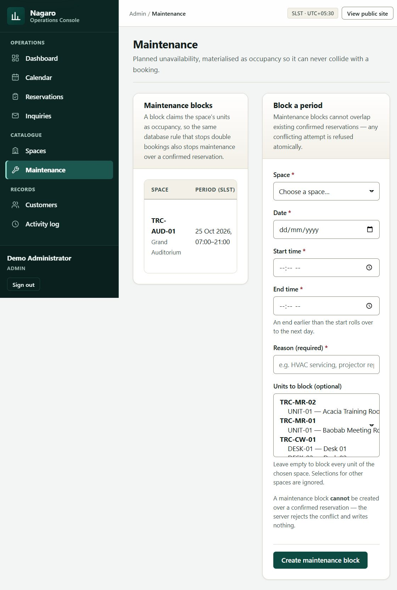
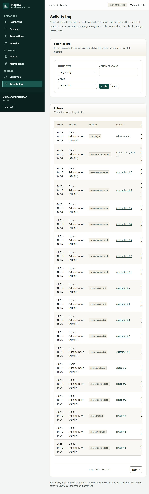
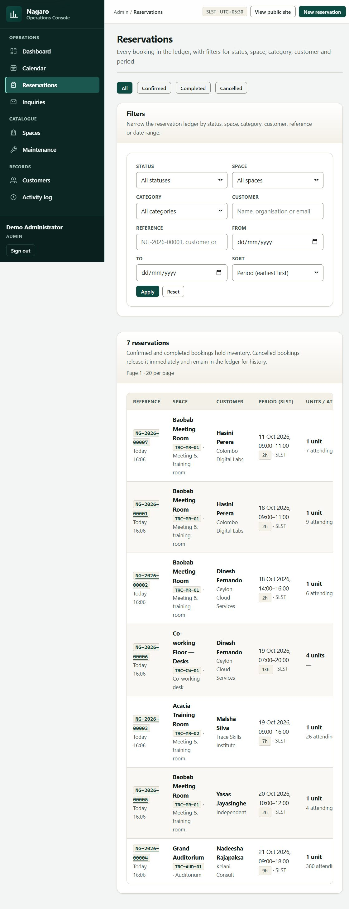
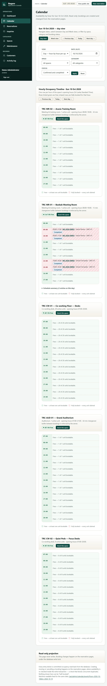

TRACE Expert City · Maradana · Colombo, Sri Lanka
Nagaro Space Booking System
Space booking & rental management for a meeting-room, auditorium and
co-working venue — public discovery, staff-verified confirmation, and a database that
makes double booking impossible.
5 published spaces
3 venue categories
SLST UTC+05:30
LKR pricing
Say This replaces the shared spreadsheet the venue used before: no
double bookings, no lost inquiries, one shared view of what is free.
The problem
A spreadsheet cannot promise a room only once
- Bookings held in a shared spreadsheet — no single source of truth
- Two staff could promise the same room to two clients
- Inquiries arrived by phone, email and walk-in, tracked inconsistently
- No reliable availability view for the public
- Turnaround buffers enforced only by memory
What it cost
A conflict discovered at the door is a client who has to be turned away, a refund to
negotiate and a booking lost. Every one of these failures is structural, not personal —
and all of them are enforceable by software.
Say The damage is structural. Nothing here is a criticism of the staff;
the tool simply could not do the checks they were doing by hand.
The proposed solution
Public discovery. Staff control. Database guarantee.
- Public site — browse published spaces, check provisional availability,
submit a booking request. No accounts, no payments.
- Staff console — the only place a booking becomes confirmed.
- Maintenance blocks, turnaround buffers and an append-only audit log.
Defining property: two overlapping confirmed reservations on the same
single-capacity resource can never both commit — enforced inside the database,
not by the interface.
Say The split is deliberate: visitors discover and request; staff confirm.
Every check a human gets wrong moves into the database where it cannot be forgotten.
User workflow
Browse → check → request → reference
- Filter by category: meeting/training, auditorium, co-working
- Capacity, amenities, LKR rate card and hours in SLST
- Availability check is explicitly provisional
- Submitting issues a reference such as
INQ-2026-00003 and
reserves nothing
"This check does not hold the space." — the exact wording a visitor sees.
Demonstrate Open /spaces, filter to Auditorium, open a space, check
availability, submit a request, show the reference.
Administrator workflow
One console for the whole operation
- Spaces — publish, archive, photographs, amenities, rates
- Inquiries — review requests; see whether email was delivered
- Reservations — confirm, edit, cancel with a mandatory reason
- Maintenance — block a space or individual units
- Calendar — hour-by-hour occupancy per space
- Customers — staff-only client records
- Activity log — append-only, written in the same transaction


Demonstrate Review an inquiry → create a reservation → attempt an
overlapping booking (refused) → cancel with a reason.
Core rules
Rules the system enforces for you
| Rule | How it is guaranteed |
|---|
| No double booking | Occupancy triggers raise DOUBLE_BOOKING_CONFLICT inside a BEGIN IMMEDIATE transaction |
| Maintenance blocks availability | Blocks are written as occupancy, so they cannot collide with a booking |
| Turnaround buffer | Enforced server-side between adjacent bookings |
| Opening hours & same-day rule | Rejected before anything is written |
| Colombo time | All local maths pinned to Asia/Colombo (UTC+05:30, no DST); storage is UTC epoch-ms |
| Cancellations | Reason required, kept permanently, inventory released atomically |
Say This is the slide an engineer will probe. Availability is re-checked
while holding the write lock, and a trigger still rejects any overlap even if some future code
path forgot to check.
Interface demonstration
Real screenshots of the running system


Measured at 1440 / 768 / 390 px: 15 routes × 3 widths,
zero horizontal overflow, zero layout defects.
Say These are captures of the running app taken during this verification
pass — not mock-ups. The public site is server-rendered and small; the console is a dense
operations tool; both are fully responsive.
Technical architecture
Deliberately boring, on purpose
- Runtime: Node.js 22.5+ with built-in
node:sqlite; no native modules, no build step
- HTTP: custom router on
node:http; server-rendered HTML; one small vanilla-JS layer (no SPA, no bundler)
- Data: SQLite with
BEGIN IMMEDIATE, foreign keys ON, partial unique indexes, anti-overlap triggers
- Security: signed session cookies, CSRF on every mutating form, parameterised SQL, strict CSP, rate limiting, inert media, hashed IPs
- Email: optional SMTP; reports
NOT_CONFIGURED honestly when unset
Say The one hard guarantee is pushed down into the database where it
cannot be bypassed. That is also why the whole thing starts in seconds anywhere.
Testing & verification
What was actually run
| Check | Result |
|---|
npm test — unit & integration | 192 passed, 0 failed |
npm run test:concurrency | 37 passed, 0 failed |
npm run test:e2e — real forms, CSRF, upload | 63 passed, 0 failed |
| Browser workflow pass (request → confirm → overlap → cancel → maintenance) | Passed |
| Responsive sweep — 15 routes × 1440/768/390 | 0 overflow, 0 defects |
| Time-zone independence (4 host zones incl. UTC+14) | Passed |
No deployment and no live-email claim is made here,
because neither was performed.
Say Everything on this slide was executed in this environment, not copied
from an earlier report. Where a workflow was driven in a real browser I say browser; where it was
verified by the HTTP harness I say harness.
Limitations & next steps
Locally demo-ready — not yet deployed
- Deployment: locally demo-ready only. The runtime uses a local SQLite file and a
local uploads folder; there is no serverless entry point and no
vercel.json.
- Persistence needed for production. A PostgreSQL schema and a Vercel Blob adapter
already exist but are not wired to the runtime.
- Email is optional; the demo runs with SMTP unconfigured and says so.
Next steps
- Async PostgreSQL adapter behind the existing service layer
- Scheduled retention job
- Staff notification digests
Say I want to be exact about the boundary: a reliable system you can
demo end to end today, not a production deployment. The reason is persistence — serverless
disks are ephemeral. The migration path is already sketched; the work is the adapter, not a
redesign.